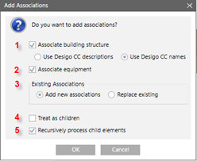
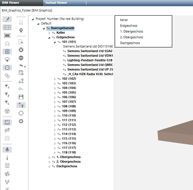

Add Options to the Associations Dialog Box
The step-by-step instruction is described in BIM Viewer.

Add options to the associations dialog box | ||||
| Section | Description | ||
1 | Associated building structure | If selected, the association process attempts to associate Desigo CC data points for floors / rooms with the corresponding floor / rooms in the BIM data. The following options determine whether Desigo CC names or descriptions are used to an associated BIM element. NOTE: Desigo CC names are used by default. | ||
2 | Setup associations | If selected, the association process attempts to association room units from Desigo CC with devices in the BIM data. This action uses the ProductMapping.csv file that defines the various rules to define units and association rules. Additional information on this file is available in the Set Configurations section. | ||
3 | Existing associations | Select whether to add or replace existing associations. | ||
4 | Treat as children | If selected, the highlighted Desigo CC data points are not assigned directly to the target BIM object, but rather are treated as a child element of the target BIM object. Example: In the technical view, multiple rooms can be selected and dragged to one BIM floor object. The rooms are associated to rooms on the same floor if Treat as children is selected. If cleared, all Desigo CC rooms are assigned the BIM floor object. | ||
5 | Recursively process child objects | If selected, all child elements are associated recursively with the selected child objects. If cleared, only select nodes are associated with the target BIM object. | ||
Example of possible automatically associations | ||||
BIM data | System data | Association | ||
1st floor | 1st floor | Yes | ||
1st floor | 1st floor | Yes | ||
1st floor | 1st floor | No | ||
1st floor | Floor 1 | No | ||
1st floor | First floor | No | ||
Example of applied rules:

- If Associate building structure is selected:
- Building, floors, and rooms are associated by comparing the Desigo CC data point names / descriptions (based on the selected option in the current language) against the BIM object names on the same hierarchy level (Note: BIM names are not language neutral).
- Object names / descriptions do not need to be an exact match. Approximation algorithms are applied.
- Drag source node(s) are always associated with the drag target, unless Treat as children is selected.
- In this example, the Technical View is used as the target source. This is practical since this view has a hierarchical building structure similar to BIM. Any view may be used in however to configure associations.
- If Setup Associations is selected:
- Room equipment (in other words, objects below the room level) is associated using an association table. Additional information on the association algorithm is available in Modifying the Product Mapping Table.
- The recursive association is not limited in a view to the existing room / device hierarchy. A property string mapping can also control it (see Modifying the Product Mapping Table).
- In principle, each data point can be associated by dragging it without using the integrated recursive association algorithm.
- More than one data point can be associated to the same BIM object. In other words, a target node (BIM) may have multiple associations.